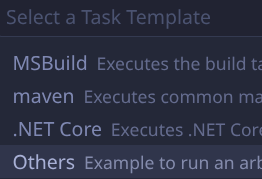
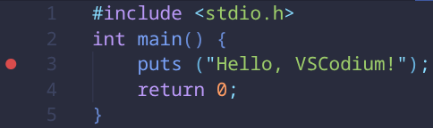

VSCodium is the community-maintained telemetry-free build of VSCode, built from the same codebase. Install it according to the instructions for your distro at VSCodium.com. Launch it and open the "Extensions" side-bar on the left. Install the following extensions. The extension ID is provided in brackets, and can be copy-pasted into VSCodium.
Create a main.c file - a simple "Hello World" example as below will be fine:
#include <stdio.h>
int main() {
puts ("Hello, VSCodium!");
return 0;
}
Save the file, then press CTRL+Shift+P to open the command prompt at the top of the window. Type in, "configure task" and select "Tasks: Configure Task."

In the next list, select, "Create tasks.json file from template."

Select "Others".

This will generate a basic tasks.json template inside the .vscode folder. It should look like this:
{
// See https://go.microsoft.com/fwlink/?LinkId=733558
// for the documentation about the tasks.json format
"version": "2.0.0",
"tasks": [
{
"label": "echo",
"type": "shell",
"command": "echo Hello"
}
]
}
Change the task (the part inside the curly braces) to this:
"label": "build",
"type": "shell",
"command": "gcc main.c -ggdb"
You can replace the command with whatever you're using to build your program. For example, "cmake --build build".
Now open the debugging menu in the top-left and click, "create a launch.json file."

In the "Select debugger" prompt, select GDB.

It should generate a launch.json file inside the .vscode folder with contents like this:
{
// Use IntelliSense to learn about possible attributes.
// Hover to view descriptions of existing attributes.
// For more information, visit: https://go.microsoft.com/fwlink/?linkid=830387
"version": "0.2.0",
"configurations": [
{
"name": "Debug",
"type": "gdb",
"request": "launch",
"target": "./bin/executable",
"cwd": "${workspaceRoot}",
"valuesFormatting": "parseText"
}
]
}
The curly braces inside "configurations" define one debugging configuration. Fill it in like so:
"name": "Debug",
"type": "gdb",
"request": "launch",
"target": "a.out",
"cwd": "${workspaceRoot}",
"valuesFormatting": "parseText",
"preLaunchTask": "build"
If your output executable is named differently than a.out, you'll have to enter the correct name. The "preLaunchTask" is what causes vscode to automatically build your program whenever you hit the debug hotkey.

With that set up, you should be able to press F5 to debug (or press the green play button in the debug sidebar). You should see your build task command get run, building your program, then gdb will launch, fully integrated with vscode. Try adding a breakpoint to your program by clicking in the line number column (see the red dot), then debug again and see how your program pauses at the breakpoint.